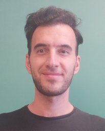

Mohsen Moradi

- Research Scientist,
- Researcher in information theory, channel coding, quantum error correction, and wireless communications
Email: moradi.coding@gmail.com
Location: Boston, Massachusetts, USA
I am a Postdoctoral Research Associate at Northeastern University. My work focuses on wireless communications, information theory, channel coding, and quantum error-correcting codes. I enjoy working at the intersection of theory and practice, especially when information-theoretic ideas lead to efficient and robust systems.
Previously, I was a Ph.D. student at Bilkent University under the supervision of Prof. Erdal Arıkan . My doctoral research centered on polar-like codes and the performance and computational analysis of polarization-adjusted convolutional (PAC) codes.
Research Interests
- Error-correcting codes: polar codes, PAC codes, LDPC codes, and fair-density parity-check codes
- Quantum error correction: QLDPC codes, quantum convolutional codes, and belief-propagation decoding
- Wireless communications: OFDM/OFDMA, MIMO, interference control, channel estimation, and beamforming
- Learning for communications: reinforcement learning, machine learning, and decoder design
Recent News
- Presenting “Sequential BP-Based Decoding of QLDPC Codes” at IEEE ICC 2026. Poster
- “PAC Codes with Bounded-Complexity Sequential Decoding” accepted for publication in IEEE Transactions on Information Theory.
- “A New Metric Function for SC-Based Polar Decoders” accepted for publication in IEEE Transactions on Communications.